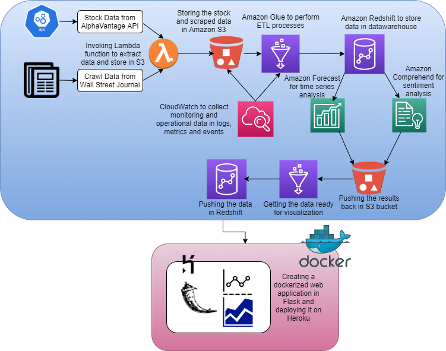

Architecture

1. Extracted data from Alpha Vantage (Stock API) and scraped data from Wall Street Journal by invoking a Lambda function on AWS and stored it in S3 bucket.
2. Collected the data from S3 bucket to AWS Glue to clean and merge the data and store it on Redshift in a data warehouse.
3. Pulled the data from Redshift to calculate the sentiment analysis using Amazon Comprehend giving sentiment, positive scores, negative scores, neutral scores and mixed scores and store it back on Redshift by cleaning and transforming on Amazon Glue.
4. Pulled the data from Redshift to predict the stock prices for the next 2 months using Amazon Forecast and store it back on Redshift by cleaning and transforming on Amazon Glue.
5. CloudWatch can be used to collect monitoring and operational data in logs, metrics and events.
6. Created a Flask web application to show the analysis and findings using PowerBI and deployed it on Heroku.
7. Dockerized the Web application.
Design Considerations
Scraping the content from Wall Street Journal of each date for a 2 year long period was taking significant amount of time. For example: For the date 1st March 2018 there were 132 articles so it took half an hour to scrape that much data. We tried scraping the content for a week along with the article's headlines and fed it to Amazon Comprehend. We found out that there was not much difference in the sentiment we got from both. So instead of scraping huge amounts of data we scraped the articles headlines to get similar results but with less time.
While extracting the stock price data using Alpha Vantage API we got the data in JSON format. The ETL jobs to transform this data and make it ready for further analysis would take more than 10 minutes.We then tried transforming the data from JSON to CSV format which reduced our ETL job run time to 5-6 minutes.
We could have shown the visualizations in QuickSight which is an Amazon product just like most of our pipeline which would have been easier because Quicksight can take data directly from S3 bucket. To make it scalable and make the data available for other tools we thought of loading the data to Redshift which would make it easier to connect to other visualization tools like PowerBI, Tableau.
To increase the scalability of the pipeline we used triggers so that we can extract the data and see the analysis and forecasting in real time.